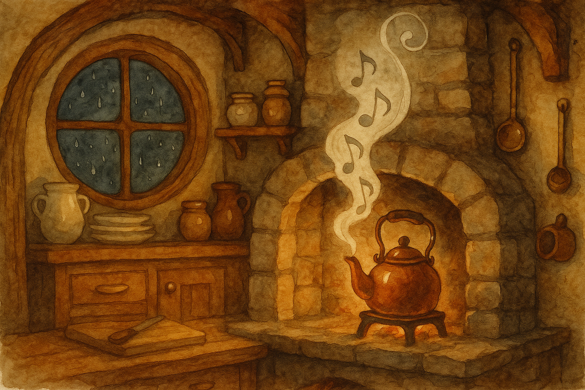

Fourth Age, in the Shire when rain drums on round windows and the tea-leaves wait their turn
There are kettles that sing when they must, and there are kettles that sing when they choose. In the Hill-country it is said that a good kettle gives one honest whistle for the water, and a second—if it comes at all—for the heart. This is a small telling of how I first learned to hear the difference.
It was a wet evening, one of those Shire nights when the lanes go black early and even the most determined stars keep behind their curtains. The rain had settled into a steady tapping—polite at first, then more familiar, like a cousin who has decided to stay until morning.
I had a fire going and a pan of seed-cakes cooling on the stone. The good brass kettle sat on the iron trivet, filled from the cold pump, and as I set about laying out cups (for there is always the chance of company, no matter what your neighbours say) the kettle began to whisper to itself in the way kettles do before they find their voice.
Then it sang.
One clear whistle—bright as a penny new-scrubbed—rose up with the steam and curled along the rafters. I smiled, as any sensible hobbit would, and reached for the tea-caddy.
But before I had even chosen between the mint and the plain leaf, the kettle sang again.
Not louder; not sharper. Simply again. A second song, close on the first, as though the kettle had forgotten it had already spoken—or as though it meant to be certain it was heard.
I lifted the lid and peered in, expecting some trick of the boil. But the water was not yet rolling. It shivered, yes, and a few bright beads ran along the bottom like quicksilver. The kettle was ready for tea—but not so ready as to warrant such insistence.
Outside, the rain thickened. Somewhere down the Hill, the Water muttered to itself and carried on.
The kettle sang a third time, softer than the first two; and in that softer note there was, I thought, something like a question.
I set the tea-caddy down without opening it. I stood still. It is a strange thing to admit—particularly for a Baggins—but in that moment I felt, plain as the warmth on my face, that if I poured the tea at once I would be pouring it for myself alone, and that would be the wrong sort of night for solitary cups.
So I went to the round door and opened it.
There on the step was a traveller: not one of our folk, but a small man, drenched through, with a cloak darkened by the rain and mud on his boots. He held his hands out, not in begging, but in that careful way that says, I know I am a bother. I know I am late. But I have come to the right door if there is any right door left in this weather.
“Begging your pardon,” he said, and his teeth clicked once with cold. “I’ve walked since the last light, and I missed the turn by the mill. I saw smoke and thought I’d chance a question.”
Behind me the kettle sang its second song again—not loud enough for him to hear in the rain, but quite loud enough for me to hear in the warmth.
Now, I have heard some hobbits say, with great firmness, that travellers are a nuisance and that a locked door is an honest door. I have heard others say (usually with their mouths full) that one should be hospitable, provided one’s hospitality is not too inconvenient.
But there are old sayings older than our comfort, and there are tools older than our excuses. A kettle, for instance.
I stepped back and said, “Come in out of that. You’ve found the right door. Wipe your feet as well as you can manage, and we’ll see what the fire makes of you.”
He entered as though he had been taught to do so without taking too much room in the world. Water ran off his cloak in thin threads and hissed on the hearthstone. I took the cloak and hung it near the fire, and when I turned back the kettle was singing its first honest whistle again—at last, properly boiling.
“Tea?” I asked.
“If it’s not too much,” he said, looking at the seed-cakes as if they were a dream he did not deserve.
“It is never too much,” I said, which was a bold thing to say, but I found it true as soon as I spoke it.
While the cups warmed and the tea darkened and the rain did its best to drown the world outside, the traveller told me small harmless things: where the road was washed, where a bridge was being mended, how the wind changed near the far fields. Nothing heroic. Nothing that would be written in any book. And yet, as he spoke, the night seemed less wet and less heavy; the fire steadied; the very room grew larger, as though making space for the simple fact that someone else was breathing in it.
When he had eaten a seed-cake (slowly, with gratitude, as one eats something one has earned by walking in weather) he looked at the kettle, which had fallen quiet, and said with a faint smile, “Your kettle is a friendly one.”
“Is it?” I said.
“Aye,” he said. “Some kettles only shout when they’re angry. That one… it sounds like it remembers what it’s for.”
After he had gone on his way—drier, warmer, and with a little food wrapped up besides—I sat down by the hearth with the last of the tea and listened. The kettle was empty then, cooling on the trivet; but in the settling of the metal there was a faint ticking, and I found I could hear an old verse my mother used to hum without words when she worked:
First song: water, bright and near;
Second song: open up your ear.
Third song: fire and bread to share—
For no heart keeps its heat in air.
I do not say that kettles know the future, or that they can name a knock before it comes. But I have noticed this: on the nights when I am most tempted to keep my comfort to myself, the kettle is the quickest to sing twice. And on the nights when I pour the first cup with a generous hand, the kettle is content with one honest whistle and no more.
So if ever your kettle gives a second song before the water truly boils, do not scold it. Stand still. Listen. And if the rain is tapping at your windows, perhaps—just perhaps—go and see what waits on your step.
— Bilbo